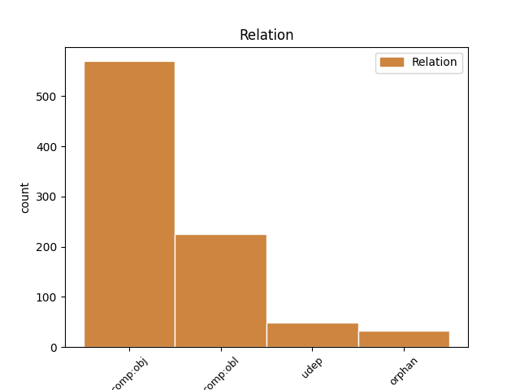
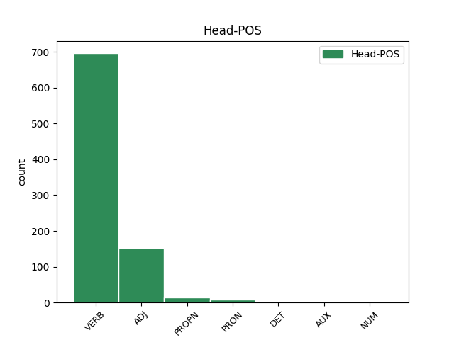
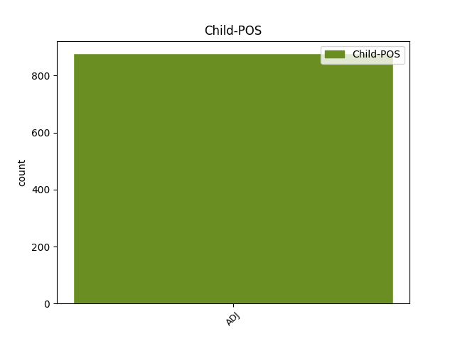

Distribution of features within this leaf



Agreement Rules sorted by frequency.
- When the dependent token is the direct object complements(comp:obj) of the head token, and the head token is VERB and the dependent token is ADJ.
1 καὶ _ _ _ _ 0 _ _ _
2 πᾶς _ _ _ _ 0 _ _ _
3 κυβερνήτης _ _ _ _ 0 _ _ _
4 καὶ _ _ _ _ 0 _ _ _
5 πᾶς _ _ _ _ 0 _ _ _
6 ὁ _ _ _ _ 0 _ _ _
7 ἐπὶ _ _ _ _ 0 _ _ _
8 τόπον _ _ _ _ 0 _ _ _
9 πλέων _ _ _ _ 0 _ _ _
10 καὶ _ _ _ _ 0 _ _ _
11 ναῦται _ _ _ _ 0 _ _ _
12 καὶ _ _ _ _ 0 _ _ _
13 ὅσοι _ _ _ _ 0 _ _ _
14 τὴν _ _ _ _ 0 _ _ _
15 θάλασσαν _ _ _ _ 0 _ _ _
16 ἐργάζονται _ _ _ _ 0 _ _ _
17 ἀπὸ _ _ _ _ 0 _ _ _
18 μακρόθεν _ _ _ _ 0 _ _ _
19 ἔστησαν _ _ _ _ 0 _ _ _
20 καὶ _ _ _ _ 0 _ _ _
21 ἔκραζον _ _ _ _ 0 _ _ _
22 βλέποντες _ _ _ _ 0 _ _ _
23 τὸν _ _ _ _ 0 _ _ _
24 καπνὸν _ _ _ _ 0 _ _ _
25 τῆς _ _ _ _ 0 _ _ _
26 πυρώσεως _ _ _ _ 0 _ _ _
27 αὐτῆς _ _ _ _ 0 _ _ _
28 λέγοντες λέγω VERB V- Case=Nom|Gender=Masc|Number=Plur|Tense=Pres|VerbForm=Part|Voice=Act 0 _ _ _
29 τίς _ _ _ _ 0 _ _ _
30 ὁμοία ὅμοιος ADJ A- Case=Nom|Degree=Pos|Gender=Fem|Number=Sing 28 comp:obj _ ref=REV_18.18
31 τῇ _ _ _ _ 0 _ _ _
32 πόλει _ _ _ _ 0 _ _ _
33 τῇ _ _ _ _ 0 _ _ _
34 μεγάλῃ _ _ _ _ 0 _ _ _
1 εἰ _ _ _ _ 0 _ _ _
2 δὲ _ _ _ _ 0 _ _ _
3 μήγε _ _ _ _ 0 _ _ _
4 καὶ _ _ _ _ 0 _ _ _
5 ἄν _ _ _ _ 0 _ _ _
6 ὡς _ _ _ _ 0 _ _ _
7 ἄφρονα _ _ _ _ 0 _ _ _
8 δέξασθέ _ _ _ _ 0 _ _ _
9 με _ _ _ _ 0 _ _ _
10 ἵνα _ _ _ _ 0 _ _ _
11 καὶ _ _ _ _ 0 _ _ _
12 ἐγώ _ _ _ _ 0 _ _ _
13 μικρόν μικρός ADJ A- Case=Acc|Degree=Pos|Gender=Neut|Number=Sing 0 _ _ _
14 τι τὶς ADJ Px Case=Acc|Gender=Neut|Number=Sing 13 udep _ ref=2COR_11.16
15 καυχήσωμαι _ _ _ _ 0 _ _ _
1 γέγραπται _ _ _ _ 0 _ _ _
2 γὰρ _ _ _ _ 0 _ _ _
3 ὅτι _ _ _ _ 0 _ _ _
4 ἐπικατάρατος _ _ _ _ 0 _ _ _
5 πᾶς _ _ _ _ 0 _ _ _
6 ὃς _ _ _ _ 0 _ _ _
7 οὐκ _ _ _ _ 0 _ _ _
8 ἐμμένει _ _ _ _ 0 _ _ _
9 πᾶσιν πᾶς ADJ Px Case=Dat|Gender=Masc,Neut|Number=Plur 11 comp:obl _ ref=GAL_3.10
10 τοῖς _ _ _ _ 0 _ _ _
11 γεγραμμένοις γράφω VERB V- Aspect=Perf|Case=Dat|Gender=Neut|Number=Plur|Tense=Past|VerbForm=Part|Voice=Pass 0 _ _ _
12 ἐν _ _ _ _ 0 _ _ _
13 τῷ _ _ _ _ 0 _ _ _
14 βιβλίῳ _ _ _ _ 0 _ _ _
15 τοῦ _ _ _ _ 0 _ _ _
16 νόμου _ _ _ _ 0 _ _ _
17 τοῦ _ _ _ _ 0 _ _ _
18 ποιῆσαι _ _ _ _ 0 _ _ _
19 αὐτά _ _ _ _ 0 _ _ _
1 Παῦλος _ _ _ _ 0 _ _ _
2 κλητὸς _ _ _ _ 0 _ _ _
3 ἀπόστολος _ _ _ _ 0 _ _ _
4 Χριστοῦ _ _ _ _ 0 _ _ _
5 Ἰησοῦ _ _ _ _ 0 _ _ _
6 διὰ _ _ _ _ 0 _ _ _
7 θελήματος _ _ _ _ 0 _ _ _
8 θεοῦ _ _ _ _ 0 _ _ _
9 καὶ _ _ _ _ 0 _ _ _
10 Σωσθένης _ _ _ _ 0 _ _ _
11 ὁ _ _ _ _ 0 _ _ _
12 ἀδελφός _ _ _ _ 0 _ _ _
13 τῇ _ _ _ _ 0 _ _ _
14 ἐκκλησίᾳ _ _ _ _ 0 _ _ _
15 τοῦ _ _ _ _ 0 _ _ _
16 θεοῦ _ _ _ _ 0 _ _ _
17 τῇ _ _ _ _ 0 _ _ _
18 οὔσῃ _ _ _ _ 0 _ _ _
19 ἐν _ _ _ _ 0 _ _ _
20 Κορίνθῳ _ _ _ _ 0 _ _ _
21 ἡγιασμένοις _ _ _ _ 0 _ _ _
22 ἐν _ _ _ _ 0 _ _ _
23 Χριστῷ _ _ _ _ 0 _ _ _
24 Ἰησοῦ _ _ _ _ 0 _ _ _
25 κλητοῖς κλητός ADJ A- Case=Dat|Degree=Pos|Gender=Masc|Number=Plur 0 _ _ _
26 ἁγίοις ἅγιος ADJ A- Case=Dat|Degree=Pos|Gender=Masc|Number=Plur 25 comp:obl _ ref=1COR_1.2
27 σὺν _ _ _ _ 0 _ _ _
28 πᾶσιν _ _ _ _ 0 _ _ _
29 τοῖς _ _ _ _ 0 _ _ _
30 ἐπικαλουμένοις _ _ _ _ 0 _ _ _
31 τὸ _ _ _ _ 0 _ _ _
32 ὄνομα _ _ _ _ 0 _ _ _
33 τοῦ _ _ _ _ 0 _ _ _
34 κυρίου _ _ _ _ 0 _ _ _
35 ἡμῶν _ _ _ _ 0 _ _ _
36 Ἰησοῦ _ _ _ _ 0 _ _ _
37 Χριστοῦ _ _ _ _ 0 _ _ _
38 ἐν _ _ _ _ 0 _ _ _
39 παντὶ _ _ _ _ 0 _ _ _
40 τόπῳ _ _ _ _ 0 _ _ _
41 αὐτῶν _ _ _ _ 0 _ _ _
42 καὶ _ _ _ _ 0 _ _ _
43 ἡμῶν _ _ _ _ 0 _ _ _
1 νῦν _ _ _ _ 0 _ _ _
2 δὲ _ _ _ _ 0 _ _ _
3 συντυχίη _ _ _ _ 0 _ _ _
4 τοῖσι _ _ _ _ 0 _ _ _
5 μὲν _ _ _ _ 0 _ _ _
6 κακὴ _ _ _ _ 0 _ _ _
7 ἐπεγένετο _ _ _ _ 0 _ _ _
8 τοῖσι _ _ _ _ 0 _ _ _
9 δὲ _ _ _ _ 0 _ _ _
10 ἡ _ _ _ _ 0 _ _ _
11 αὐτὴ αὐτός ADJ Pd Case=Nom|Gender=Fem|Number=Sing 0 _ _ _
12 αὕτη _ _ _ _ 0 _ _ _
13 σύμμαχος σύμμαχος ADJ A- Case=Nom|Degree=Pos|Gender=Fem|Number=Sing 11 orphan _ ref=5.65.1
1 Παρέλαβον _ _ _ _ 0 _ _ _
2 οὖν _ _ _ _ 0 _ _ _
3 τὸν _ _ _ _ 0 _ _ _
4 Ἰησοῦν _ _ _ _ 0 _ _ _
5 καὶ _ _ _ _ 0 _ _ _
6 βαστάζων _ _ _ _ 0 _ _ _
7 ἑαυτῷ _ _ _ _ 0 _ _ _
8 τὸν _ _ _ _ 0 _ _ _
9 σταυρὸν _ _ _ _ 0 _ _ _
10 ἐξῆλθεν _ _ _ _ 0 _ _ _
11 εἰς _ _ _ _ 0 _ _ _
12 τὸν _ _ _ _ 0 _ _ _
13 λεγόμενον _ _ _ _ 0 _ _ _
14 Κρανίου _ _ _ _ 0 _ _ _
15 τόπον _ _ _ _ 0 _ _ _
16 ὃ _ _ _ _ 0 _ _ _
17 λέγεται _ _ _ _ 0 _ _ _
18 Ἑβραϊστὶ _ _ _ _ 0 _ _ _
19 Γολγοθᾶ _ _ _ _ 0 _ _ _
20 ὅπου _ _ _ _ 0 _ _ _
21 αὐτὸν _ _ _ _ 0 _ _ _
22 ἐσταύρωσαν _ _ _ _ 0 _ _ _
23 καὶ _ _ _ _ 0 _ _ _
24 μετ’ _ _ _ _ 0 _ _ _
25 αὐτοῦ _ _ _ _ 0 _ _ _
26 ἄλλους _ _ _ _ 0 _ _ _
27 δύο _ _ _ _ 0 _ _ _
28 ἐντεῦθεν _ _ _ _ 0 _ _ _
29 καὶ _ _ _ _ 0 _ _ _
30 ἐντεῦθεν _ _ _ _ 0 _ _ _
31 μέσον μέσος ADJ A- Case=Acc|Degree=Pos|Gender=Neut|Number=Sing 34 orphan _ ref=JOHN_19.18
32 δὲ _ _ _ _ 0 _ _ _
33 τὸν _ _ _ _ 0 _ _ _
34 Ἰησοῦν Ἰησοῦς PROPN Ne Case=Acc|Gender=Masc|Number=Sing 0 _ _ _
1 οὐ _ _ _ _ 0 _ _ _
2 γάρ _ _ _ _ 0 _ _ _
3 τι _ _ _ _ 0 _ _ _
4 προκατημένους προκάθημαι VERB V- Case=Acc|Gender=Masc|Number=Plur|Tense=Pres|VerbForm=Part|Voice=Mid 0 _ _ _
5 τοσοῦτο τοσοῦτος ADJ Pd Case=Acc|Gender=Neut|Number=Sing 4 udep _ ref=7.172.2
6 πρὸ _ _ _ _ 0 _ _ _
7 τῆς _ _ _ _ 0 _ _ _
8 ἄλλης _ _ _ _ 0 _ _ _
9 Ἑλλάδος _ _ _ _ 0 _ _ _
10 μούνους _ _ _ _ 0 _ _ _
11 πρὸ _ _ _ _ 0 _ _ _
12 ὑμέων _ _ _ _ 0 _ _ _
13 δεῖ _ _ _ _ 0 _ _ _
14 ἀπολέσθαι _ _ _ _ 0 _ _ _
1 δεῖ _ _ _ _ 0 _ _ _
2 οὖν _ _ _ _ 0 _ _ _
3 τὸν _ _ _ _ 0 _ _ _
4 ἐπίσκοπον _ _ _ _ 0 _ _ _
5 ἀνεπίλημπτον ἀνεπίλη(μ)πτος ADJ A- Case=Acc|Degree=Pos|Number=Sing 0 _ _ _
6 εἶναι _ _ _ _ 0 _ _ _
7 μιᾶς _ _ _ _ 0 _ _ _
8 γυναικὸς _ _ _ _ 0 _ _ _
9 ἄνδρα _ _ _ _ 0 _ _ _
10 νηφάλιον _ _ _ _ 0 _ _ _
11 σώφρονα _ _ _ _ 0 _ _ _
12 κόσμιον _ _ _ _ 0 _ _ _
13 φιλόξενον _ _ _ _ 0 _ _ _
14 διδακτικόν _ _ _ _ 0 _ _ _
15 μὴ _ _ _ _ 0 _ _ _
16 πάροινον πάροινος ADJ A- Case=Acc|Degree=Pos|Number=Sing 5 comp:obj _ ref=1TIM_3.3
17 μὴ _ _ _ _ 0 _ _ _
18 πλήκτην _ _ _ _ 0 _ _ _
19 ἀλλὰ _ _ _ _ 0 _ _ _
20 ἐπιεικῆ _ _ _ _ 0 _ _ _
21 ἄμαχον _ _ _ _ 0 _ _ _
22 ἀφιλάργυρον _ _ _ _ 0 _ _ _
23 τοῦ _ _ _ _ 0 _ _ _
24 ἰδίου _ _ _ _ 0 _ _ _
25 οἴκου _ _ _ _ 0 _ _ _
26 καλῶς _ _ _ _ 0 _ _ _
27 προϊστάμενον _ _ _ _ 0 _ _ _
28 τέκνα _ _ _ _ 0 _ _ _
29 ἔχοντα _ _ _ _ 0 _ _ _
30 ἐν _ _ _ _ 0 _ _ _
31 ὑποταγῇ _ _ _ _ 0 _ _ _
32 μετὰ _ _ _ _ 0 _ _ _
33 πάσης _ _ _ _ 0 _ _ _
34 σεμνότητος _ _ _ _ 0 _ _ _
1 σὺ _ _ _ _ 0 _ _ _
2 μέντοι _ _ _ _ 0 _ _ _
3 μὴ _ _ _ _ 0 _ _ _
4 πάντα _ _ _ _ 0 _ _ _
5 θυμῷ _ _ _ _ 0 _ _ _
6 χρέο _ _ _ _ 0 _ _ _
7 μηδὲ _ _ _ _ 0 _ _ _
8 πόλιν _ _ _ _ 0 _ _ _
9 ἀρχαίην _ _ _ _ 0 _ _ _
10 ἐξαναστήσῃς _ _ _ _ 0 _ _ _
11 ἀναμάρτητον ἀναμάρτητος ADJ A- Case=Acc|Degree=Pos|Gender=Fem|Number=Sing 12 comp:obj _ ref=1.155.3
12 ἐοῦσαν εἰμί AUX V- Case=Acc|Gender=Fem|Number=Sing|Tense=Pres|VerbForm=Part|Voice=Act 0 _ _ _
13 καὶ _ _ _ _ 0 _ _ _
14 τῶν _ _ _ _ 0 _ _ _
15 πρότερον _ _ _ _ 0 _ _ _
16 καὶ _ _ _ _ 0 _ _ _
17 τῶν _ _ _ _ 0 _ _ _
18 νῦν _ _ _ _ 0 _ _ _
19 ἑστεώτων _ _ _ _ 0 _ _ _
1 ἔπρεπεν _ _ _ _ 0 _ _ _
2 γὰρ _ _ _ _ 0 _ _ _
3 αὐτῷ _ _ _ _ 0 _ _ _
4 δι’ _ _ _ _ 0 _ _ _
5 ὃν _ _ _ _ 0 _ _ _
6 τὰ _ _ _ _ 0 _ _ _
7 πάντα πᾶς DET Px Case=Nom|Gender=Neut|Number=Plur 0 _ _ _
8 καὶ _ _ _ _ 0 _ _ _
9 δι’ _ _ _ _ 0 _ _ _
10 οὗ _ _ _ _ 0 _ _ _
11 τὰ _ _ _ _ 0 _ _ _
12 πάντα πᾶς ADJ Px Case=Nom|Gender=Neut|Number=Plur 7 orphan _ ref=HEB_2.10
13 πολλοὺς _ _ _ _ 0 _ _ _
14 υἱοὺς _ _ _ _ 0 _ _ _
15 εἰς _ _ _ _ 0 _ _ _
16 δόξαν _ _ _ _ 0 _ _ _
17 ἀγαγόντα _ _ _ _ 0 _ _ _
18 τὸν _ _ _ _ 0 _ _ _
19 ἀρχηγὸν _ _ _ _ 0 _ _ _
20 τῆς _ _ _ _ 0 _ _ _
21 σωτηρίας _ _ _ _ 0 _ _ _
22 αὐτῶν _ _ _ _ 0 _ _ _
23 διὰ _ _ _ _ 0 _ _ _
24 παθημάτων _ _ _ _ 0 _ _ _
25 τελειῶσαι _ _ _ _ 0 _ _ _
Disagree Examples:
1 τοὺς _ _ _ _ 0 _ _ _
2 δέ _ _ _ _ 0 _ _ _
3 προϊσχομένων προίσχω VERB V- Case=Gen|Gender=Masc|Number=Plur|Tense=Pres|VerbForm=Part|Voice=Mid,Pass 0 _ _ _
4 ταῦτα οὗτος ADJ Pd Case=Acc|Gender=Neut|Number=Plur 3 comp:obj _ ref=1.3.2
5 προφέρειν _ _ _ _ 0 _ _ _
6 σφι _ _ _ _ 0 _ _ _
7 Μηδείης _ _ _ _ 0 _ _ _
8 τὴν _ _ _ _ 0 _ _ _
9 ἁρπαγήν _ _ _ _ 0 _ _ _
10 ὡς _ _ _ _ 0 _ _ _
11 οὐ _ _ _ _ 0 _ _ _
12 δόντες _ _ _ _ 0 _ _ _
13 αὐτοὶ _ _ _ _ 0 _ _ _
14 δίκας _ _ _ _ 0 _ _ _
15 οὐδὲ _ _ _ _ 0 _ _ _
16 ἐκδόντες _ _ _ _ 0 _ _ _
17 ἀπαιτεόντων _ _ _ _ 0 _ _ _
18 βουλοίατό _ _ _ _ 0 _ _ _
19 σφι _ _ _ _ 0 _ _ _
20 παρ’ _ _ _ _ 0 _ _ _
21 ἄλλων _ _ _ _ 0 _ _ _
22 δίκας _ _ _ _ 0 _ _ _
23 γίνεσθαι _ _ _ _ 0 _ _ _
1 τὸν _ _ _ _ 0 _ _ _
2 δὲ _ _ _ _ 0 _ _ _
3 οἶδα _ _ _ _ 0 _ _ _
4 αὐτὸς _ _ _ _ 0 _ _ _
5 πρῶτον _ _ _ _ 0 _ _ _
6 ὑπάρξαντα _ _ _ _ 0 _ _ _
7 ἀδίκων _ _ _ _ 0 _ _ _
8 ἔργων _ _ _ _ 0 _ _ _
9 ἐς _ _ _ _ 0 _ _ _
10 τοὺς _ _ _ _ 0 _ _ _
11 Ἕλληνας _ _ _ _ 0 _ _ _
12 τοῦτον οὗτος ADJ Pd Case=Acc|Gender=Masc|Number=Sing 13 comp:obj _ ref=1.5.3
13 σημήνας σημαίνω VERB V- Aspect=Perf|Case=Nom|Gender=Masc|Number=Sing|Tense=Past|VerbForm=Part|Voice=Act 0 _ _ _
14 προβήσομαι _ _ _ _ 0 _ _ _
15 ἐς _ _ _ _ 0 _ _ _
16 τὸ _ _ _ _ 0 _ _ _
17 πρόσω _ _ _ _ 0 _ _ _
18 τοῦ _ _ _ _ 0 _ _ _
19 λόγου _ _ _ _ 0 _ _ _
20 ὁμοίως _ _ _ _ 0 _ _ _
21 σμικρὰ _ _ _ _ 0 _ _ _
22 καὶ _ _ _ _ 0 _ _ _
23 μεγάλα _ _ _ _ 0 _ _ _
24 ἄστεα _ _ _ _ 0 _ _ _
25 ἀνθρώπων _ _ _ _ 0 _ _ _
26 ἐπεξιών _ _ _ _ 0 _ _ _
1 ὥστε _ _ _ _ 0 _ _ _
2 δὲ _ _ _ _ 0 _ _ _
3 ταῦτα οὗτος ADJ Pd Case=Acc|Gender=Neut|Number=Plur 4 comp:obj _ ref=1.8.1
4 νομίζων νομίζω VERB V- Case=Nom|Gender=Masc|Number=Sing|Tense=Pres|VerbForm=Part|Voice=Act 0 _ _ _
5 ἦν _ _ _ _ 0 _ _ _
6 γάρ _ _ _ _ 0 _ _ _
7 οἱ _ _ _ _ 0 _ _ _
8 τῶν _ _ _ _ 0 _ _ _
9 αἰχμοφόρων _ _ _ _ 0 _ _ _
10 Γύγης _ _ _ _ 0 _ _ _
11 ὁ _ _ _ _ 0 _ _ _
12 Δασκύλου _ _ _ _ 0 _ _ _
13 ἀρεσκόμενος _ _ _ _ 0 _ _ _
14 μάλιστα _ _ _ _ 0 _ _ _
15 τούτῳ _ _ _ _ 0 _ _ _
16 τῷ _ _ _ _ 0 _ _ _
17 Γύγῃ _ _ _ _ 0 _ _ _
18 καὶ _ _ _ _ 0 _ _ _
19 τὰ _ _ _ _ 0 _ _ _
20 σπουδαιέστερα _ _ _ _ 0 _ _ _
21 τῶν _ _ _ _ 0 _ _ _
22 πρηγμάτων _ _ _ _ 0 _ _ _
23 ὑπερετίθετο _ _ _ _ 0 _ _ _
24 ὁ _ _ _ _ 0 _ _ _
25 Κανδαύλης _ _ _ _ 0 _ _ _
26 καὶ _ _ _ _ 0 _ _ _
27 δὴ _ _ _ _ 0 _ _ _
28 καὶ _ _ _ _ 0 _ _ _
29 τὸ _ _ _ _ 0 _ _ _
30 εἶδος _ _ _ _ 0 _ _ _
31 τῆς _ _ _ _ 0 _ _ _
32 γυναικὸς _ _ _ _ 0 _ _ _
33 ὑπερεπαινέων _ _ _ _ 0 _ _ _
1 ὃ _ _ _ _ 0 _ _ _
2 μὲν _ _ _ _ 0 _ _ _
3 δὴ _ _ _ _ 0 _ _ _
4 λέγων λέγω VERB V- Case=Nom|Gender=Masc|Number=Sing|Tense=Pres|VerbForm=Part|Voice=Act 0 _ _ _
5 τοιαῦτα τοιοῦτος ADJ Pd Case=Acc|Gender=Neut|Number=Plur 4 comp:obj _ ref=1.9.1
6 ἀπεμάχετο _ _ _ _ 0 _ _ _
7 ἀρρωδέων _ _ _ _ 0 _ _ _
8 μὴ _ _ _ _ 0 _ _ _
9 τί _ _ _ _ 0 _ _ _
10 οἱ _ _ _ _ 0 _ _ _
11 ἐξ _ _ _ _ 0 _ _ _
12 αὐτῶν _ _ _ _ 0 _ _ _
13 γένηται _ _ _ _ 0 _ _ _
14 κακόν _ _ _ _ 0 _ _ _
1 ἐπὶ _ _ _ _ 0 _ _ _
2 τοῦτον _ _ _ _ 0 _ _ _
3 τῶν _ _ _ _ 0 _ _ _
4 ἱματίων _ _ _ _ 0 _ _ _
5 κατὰ _ _ _ _ 0 _ _ _
6 ἕν _ _ _ _ 0 _ _ _
7 ἕκαστον ἕκαστος ADJ A- Case=Acc|Degree=Pos|Gender=Neut|Number=Sing 8 comp:obj _ ref=1.9.2
8 ἐκδύνουσα ἐκδύω VERB V- Case=Nom|Gender=Fem|Number=Sing|Tense=Pres|VerbForm=Part|Voice=Act 0 _ _ _
9 θήσει _ _ _ _ 0 _ _ _
10 καὶ _ _ _ _ 0 _ _ _
11 κατ’ _ _ _ _ 0 _ _ _
12 ἡσυχίην _ _ _ _ 0 _ _ _
13 πολλὴν _ _ _ _ 0 _ _ _
14 παρέξει _ _ _ _ 0 _ _ _
15 τοι _ _ _ _ 0 _ _ _
16 θεήσασθαι _ _ _ _ 0 _ _ _